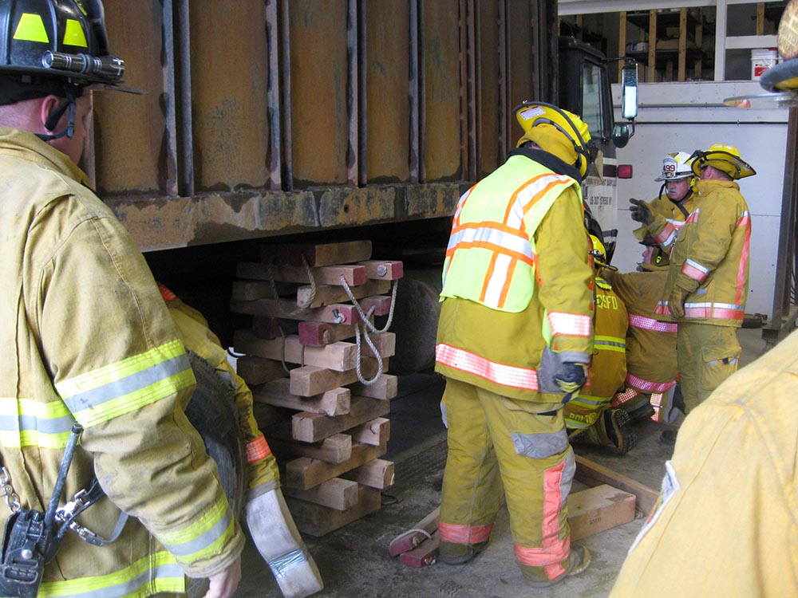
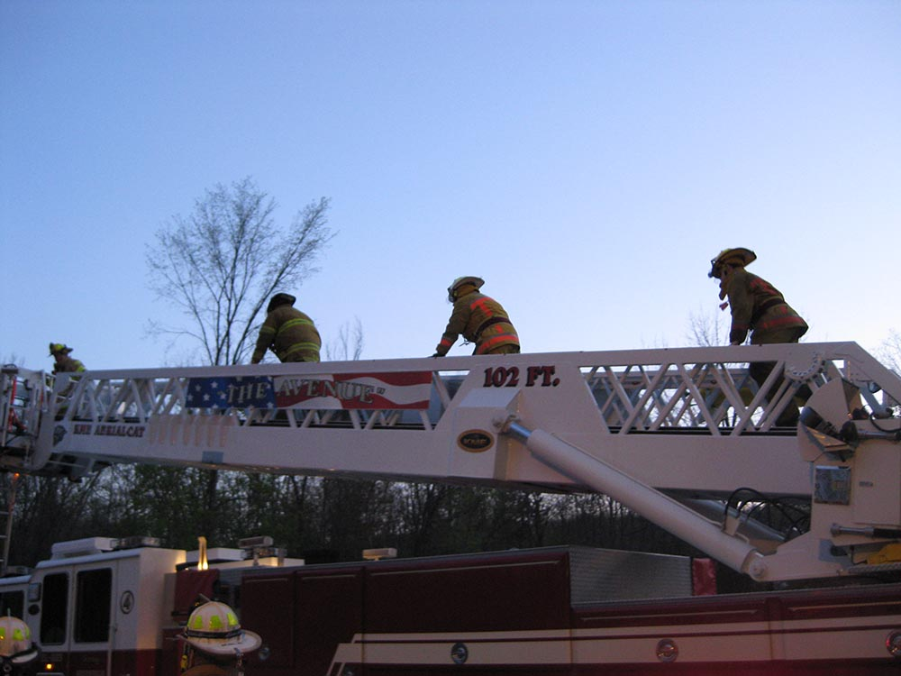
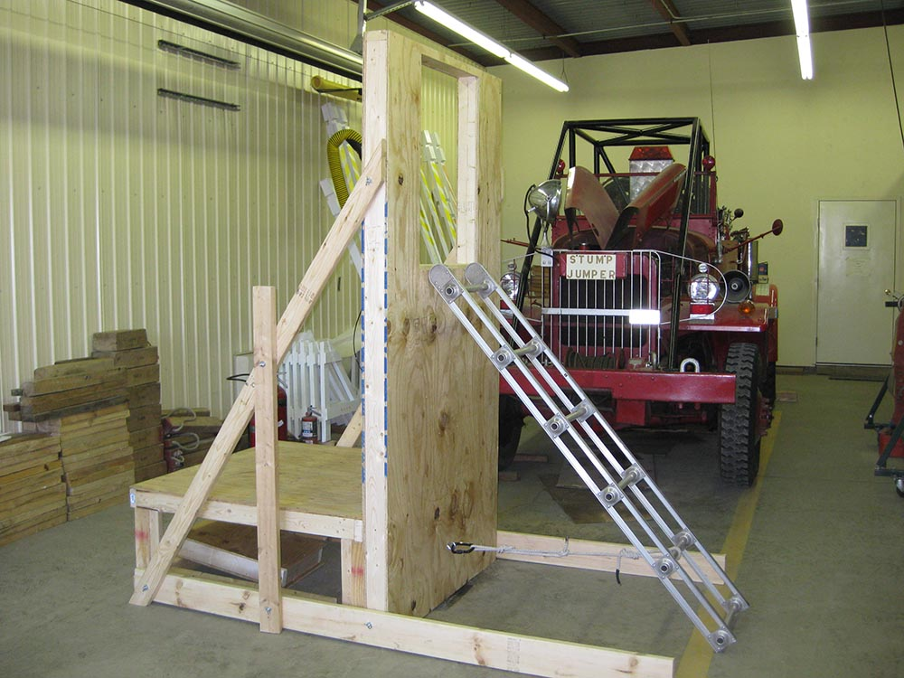
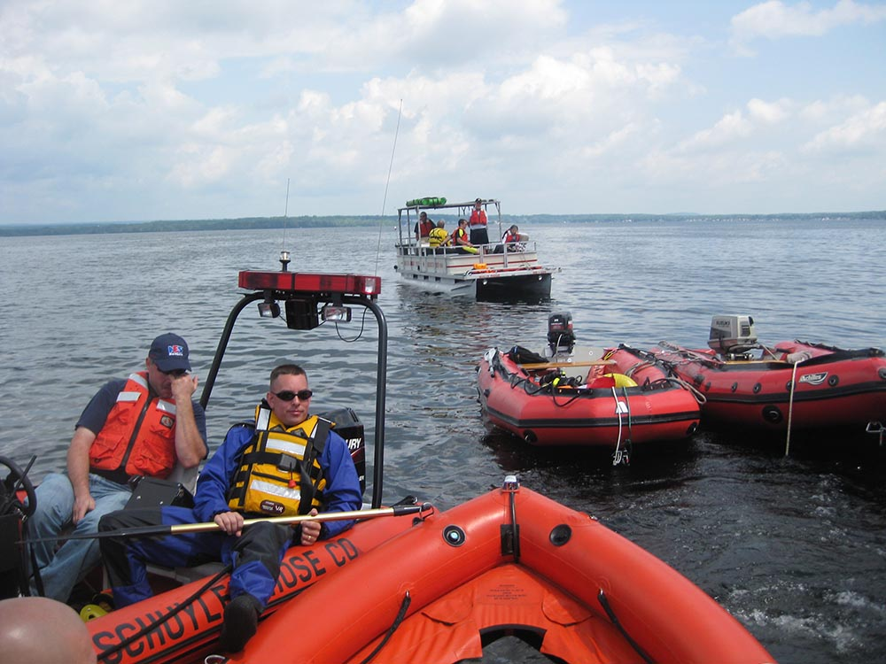
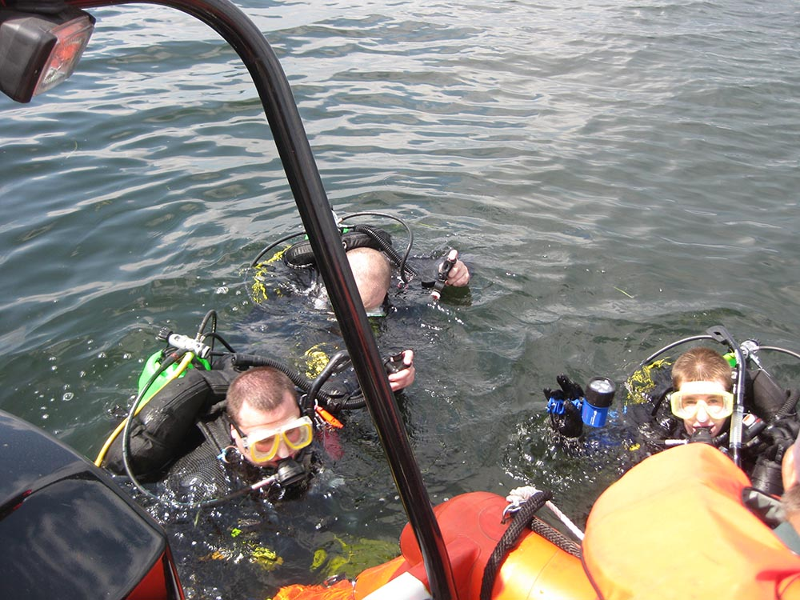
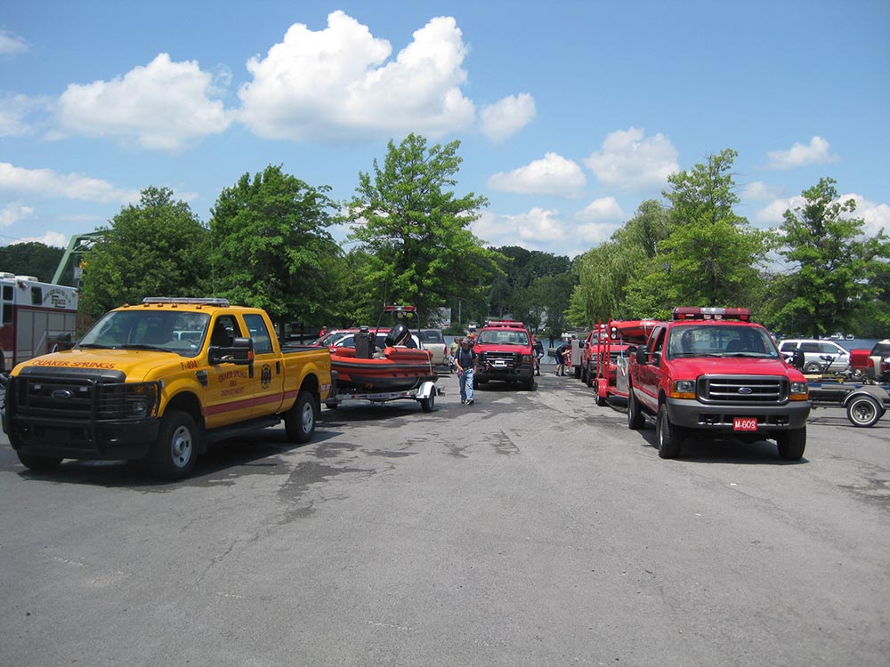

Training for members of QSFD consists of weekly drills and formal classroom or hands-on training as necessary or as classes are available.
QSFD Weekly Drills
QSFD Firefighters attend training at the firehouse at weekly drills where they work on mastering essential skills and are trained in new skills. Drills consist of classes and practical evolutions which begin every Thursday evening (excluding holidays) at 7:00 pm.

QSFD held a farm rescue drill at Turning Point Dairy. Members from Maple Ave Fire Department participated.

Maple Ave Fire Department brought their ladder truck to QSFD for a training drill.

QSFD's newest trainer for practicing egress from structures.


Water rescue drill with Schuyler Hose, Malta Ridge, the South Glens Falls dive team and the Corinth dive team.